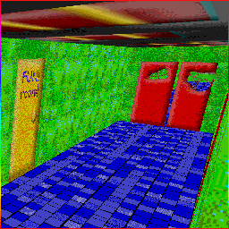
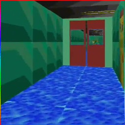
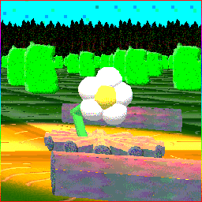

"Sticky's BIG Adventure!",
"Sticky in: Fun with Numbers!" (Paint.net, Gamemaker, Paint 3D, and 3D Movie Maker versions),
"Sticky in: Gardening!",
"Sticky Goes Camping UNDERWATER!"
"JumpWORLD 2",
"JumpGame"



Return to Main Page